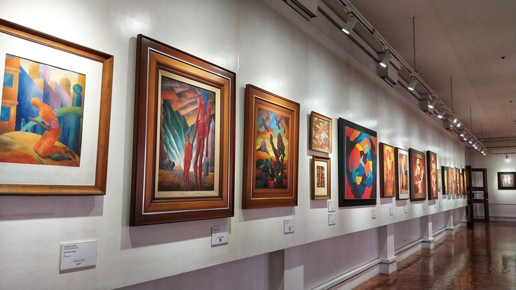

Culture & Climate
Baguio City, the "Summer Capital of the Philippines," blends highland traditions and modern art. Its cool climate and diverse heritage make it a hub for cultural expression and creativity.
Indigenous Heritage

The city honors the legacy of its indigenous tribes—the Ifugao, Kankanaey, and Ibaloi—through traditional practices like cañao ceremonies, dances in woven garments, and oral storytelling. You can meet local artisans at markets or villages where they proudly share their culture.
Panagbenga Festival

Panagbenga, meaning "season of blooming," is celebrated every February. Floats covered in vibrant flowers parade down Session Road while dancers in bright costumes perform street dances inspired by indigenous moves. It's a month-long celebration of Baguio’s beauty and unity.
Traditional Crafts & Arts
Baguio is a UNESCO Creative City for a reason—visit Tam-Awan Village for indigenous craftsmanship or BenCab Museum for visual arts and contemporary culture. Local markets also showcase wood carvings, woven bags, and silverwork, offering a glimpse of Cordilleran creativity.
Cool Climate Lifestyle

With an average temperature of 15–26°C, Baguio offers a lifestyle unlike any other city in the Philippines. Residents bundle up in hoodies, sip strawberry taho in the park, and enjoy fog-covered mornings. The climate also supports flower farming and pine tree growth.